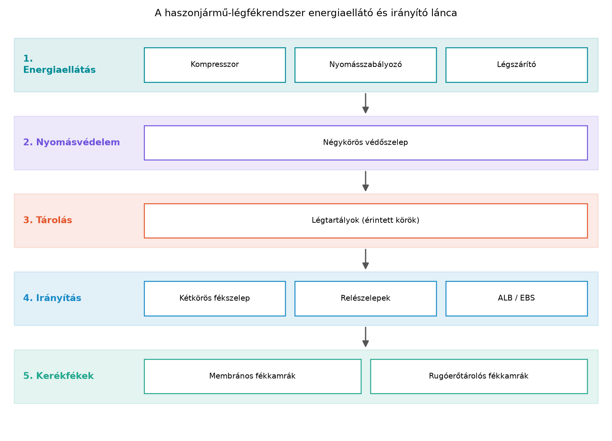

Egy nyergesvontatóból és pótkocsiból álló szerelvény műszaki vizsgája előtt a sofőr azt jelzi: a vontató levegőnyomása rendben felépül, de a pótkocsi fékje késve old, és a pótkocsi kereke időnként melegszik. A műhelyben nem elég csak a vontató manométerére nézni: a hibához végig kell követni a sűrített levegő útját a kompresszortól a fékkamráig, és meg kell érteni, miért úgy van kialakítva a rendszer, hogy levegő hiányában is biztonságosan rögzítsen. A légfék a nehéz haszonjárművek és a szerelvények alapvető biztonsági rendszere; hibás pótkocsifék nem csupán műszaki vizsgabukás, hanem közvetlen balesetveszély.
A légfékrendszer energiaellátási és irányítási lánca rétegenként ábrázolható: a kompresszor sűríti a levegőt, a nyomásszabályozó és a légszárító előkészíti, a négykörös védőszelep szétválasztja a köröket, a légtartályok tárolják a nyomástartalékot, a fékszelep és a relészelepek irányítanak, a fékkamrák pedig a kerékféket működtetik.

A levegő útja tehát: kompresszor → nyomásszabályozó/légszárító → négykörös védőszelep → légtartályok → fékszelep → relészelep/ALB → fékkamra. A pótkocsi felé ebből az energiaellátásból egy tápvezeték és egy vezérlővezeték ágazik le.
Definíció. A légfékrendszer olyan súrlódó fékrendszer, amely a pedálerőt sűrített levegő segítségével erősíti és osztja el, és amely nyomástartalékkal (légtartályokkal) rendelkezik; jellemzően M2, M3, N2, N3 járműveken, mezőgazdasági vontatókon és pótkocsikon használjuk.
Definíció. A négykörös védőszelep a kompresszor–tartály közötti elosztó védőberendezés, amely az egyes légkörök betáplálását nyomásfüggően nyitja, és egyik kör meghibásodása esetén a többi kör nyomását visszatartja. A gyakorlatban több kör is lehet; a „négykörös” elnevezés a jellemző felosztást takarja (első/hátsó üzemi fék, rögzítőfék/segédkörök).
Definíció. A rugóerőtárolós fékkamra kombinált fékkamra: az üzemi féket sűrített levegővel, a rögzítőféket pedig erős rugóval működteti. Ha a kamrában nincs elég nyomás, a rugó kinyomja a tolórudat, tehát a rögzítőfék energia nélkül is biztonságosan zár.
Definíció. A terheléssel arányos fékerő-szabályozó (ALB, automatikus terheléstől függő fékerőszabályozó) a hátsó tengely aktuális terhelése alapján csökkenti vagy növeli a hátsó kerékfékekhez jutó légnyomást, megakadályozva, hogy üres járműnél a hátsó kerekek a fékezéskor idő előtt blokkoljanak.
Definíció. A kétvezetékes pótkocsifék olyan kapcsolat, amelyben a vontató és a pótkocsi között két fő légvezeték van: a tápvezeték (a pótkocsi légtartályát tölti, a gyakorlati színezés gyakran piros) és a vezérlővezeték (a pótkocsi fékszelepének vezérlőnyomását szállítja, gyakran sárga). A rendszer biztonsági tulajdonsága, hogy a tápvezeték szakadása vagy nyomásesése a pótkocsit automatikusan lefékezi – vészfékezést hoz létre.
Összefüggés. A fékkamra által kifejtett elvi tolórúderő: ahol a kamrában uralkodó túlnyomás, a membrán/dugattyú hatásos felülete. A tényleges tolórúderő ettől kisebb, mert a visszatérítő rugó, a tömítések súrlódása és a kinematikai veszteségek csökkentik. A nyomás átváltása: .
A motor által hajtott kompresszor a rendszer nyomását jellemzően kb. 8,0–10,0 bar közötti értékre emeli (ellenőrizendő: a gyártói beállítás). A nyomásszabályozó a kompresszor üresjáratát kapcsolja: felső kapcsolási nyomásnál a kompresszor nem szállít a tartályba, alsó kapcsolási nyomásnál újra rákapcsol. A légszárító a levegő nedvességét és olajpáráját csökkenti; regeneráló üzemben a száraz levegő egy része visszaöblíti a szárítóbetétet, így télen a fagyás és a szelepdugulás kockázata kisebb. A négykörös védőszelep a nyomás alatti levegőt körönként szétosztja, és az egyes köröket egymástól védi. A légtartályok biztosítják, hogy a fékezéshez akkor is legyen energia, ha a kompresszor éppen nem szállít; emellett a tartályok alján időszakosan lecsapolják a kondenzvizet.
Az ábrán a levegő útja balról jobbra követhető: kompresszor (1) → nyomásszabályozó (2) → levegőszárító (3) → négykörös védőszelep (4) → az I–IV. kör tartályai (5), alul a víztelenítő szelepekkel (6) és a mérőcsatlakozókkal (7). Az interaktív változatban kipróbálható, hogy a IV. kör sérülésekor a többi kör nyomása megmarad.
A fékszelep (a pedálhoz kapcsolt lábszelep) a vezető pedálerőjét légnyomás-jellé alakítja. Többkörös kivitelben egy pedállal két kört vezérel, és az egyik kör meghibásodása esetén a másik kör tovább működtethető. A hosszú haszonjárművön a fékszelep és a hátsó kamrák közötti nagy távolság késleltetést okozna, ezért relészelepeket építenek be: ezek a kapott vezérlőnyomást a hozzájuk legközelebbi légtartályból gyorsan, nagyobb keresztmetszeten juttatják a fékkamrákhoz. A terheléssel arányos fékerő-szabályozó (ALB) a hátsó tengely terhelését mechanikus rugó feszességével vagy légrugós nyomásjellel érzékeli, és a hátsó kör nyomását ennek megfelelően korlátozza. A modern járműveken ezt a EBS (elektronikus fékrendszer) végzi szenzorokkal és tengelyenkénti modulátorokkal; itt az ABS-funkció is beépül.
A legegyszerűbb membrános fékkamrában egy membrán és egy tolórúd helyezkedik el. A levegőnyomás a membránt kinyomja, a tolórúd a fékdob bütykös tengelyét vagy a tárcsafék emelőkarját forgatja. Nyomásmentes állapotban a visszatérítő rugó a féket kiengedett helyzetben tartja.
A rugóerőtárolós fékkamra két részből áll. A membrános oldal az üzemi fék, a rugóerőtároló oldal a rögzítőfék. Ha a rugótérben nincs nyomás, a tárolt rugóerő a tolórudat kinyomja, tehát a kereket rögzíti. A rugót csak akkor lehet oldani, ha a rugótérbe a gyártó által megadott oldási nyomásnál nagyobb nyomást vezetnek. Vontatáskor, ha a járműnek nincs levegője, a rugóerőtároló oldócsavarjával kézi úton lehet a rugót összenyomni; ez csak vontatáshoz való ideiglenes oldás, és a fék működését részben kiiktatja.
A kétvezetékes kapcsolatnál a vontató tápvezetéke állandóan tölti a pótkocsi tartályát, a vezérlővezeték pedig a vontató fékezési nyomását közvetíti a pótkocsi-fékszelepnek. A pótkocsi-fékszelep ezt a jelet a pótkocsi saját légtartályából származó nyomással erősíti, és a pótkocsi fékkamráit működteti. Ha a tápvezeték szakad, a pótkocsi-fékszelep automatikusan a tartály nyomását a fékkamrákra engedi, így a pótkocsi lefékez. Ugyanezért a kapcsolófej nyitott vagy sérült tömítése is azonnal vészfékezéshez vezethet.
Az (a) részábra a rugóerőtárolós fékkamrát mutatja menetkész, üzemi fékező és parkoló (levegőhiányos) állapotban; a (b) részábra a vontató és a pótkocsi közötti táp- és vezérlővezetéket. Az interaktív változatban a rugótér nyomása állítható: 3,8 bar-nál (a Valós eset értéke) a rugó a 2. példa 4,5 bar-os oldási nyomása alatt részben befékezve tartja a kereket; a tápvezeték szakadása a pótkocsit vészfékezi.
A tartós lassító fékekről részletesebben a Rögzítőfékek és tartós lassító fékek alfejezet szól.
A kipufogófék a kipufogórendszerbe épített fojtószelep, amely a kipufogógáz útját részben lezárva növeli a motor fékező hatását. Előnye, hogy a kerékfékbetétek kopása nélkül ad tartós lassítást hosszú lejtőkön; hátránya, hogy nem a keréktapadásnál hat, hanem a hajtásláncon keresztül, ezért a fékhatás függ a besorolt fokozattól és a motor fordulatszámától.
Példa 1 – Membrános fékkamra tolóereje.
Számítás. Adott: a fékkamra hatásos felülete
,
a hozzávezetett légnyomás
.
A felületet m²-be váltjuk:
Az elvi tolórúderő:
A tényleges erő kisebb a visszatérítő rugó és a súrlódás miatt
(ellenőrizendő: a gyártói adat). ∎
Példa 2 – Rugóerőtároló oldási nyomása.
Számítás. Adott: a rögzítőrugó elvi ereje
,
a rugódugattyú hatásos felülete
.
A rugót akkor tartja oldva a levegő, ha a légnyomásból származó erő
legalább a rugóerővel egyenlő:
Tehát a rögzítőfék kb. 4,5 bar alatt fog; a rendszer üzemi nyomása
jellemzően 8–10 bar, így normál töltött rendszerben a rugó oldva van. Ez
az érték tanulási példa (ellenőrizendő: a gyártói adat). ∎
Példa 3 – Terheléssel arányos fékerő-szabályozó
nyomáscsökkentése.
Adott: az ALB bemenő nyomása
,
a terhelésarány-tényező
.
A hátsó körre jutó nyomás:
Ezzel üres vagy részterhelt járműnél a hátsó kerékfék kevésbé agresszív,
a blokkolás elkerülhető. ∎
Előírás. A haszonjárművek fékberendezéseire vonatkozó ENSZ-EGB 13. előírás – vagy az azzal egyenértékű EU-típusjóváhagyási követelmény – szerint a légfékrendszernek többek között rendelkeznie kell megfelelő nyomástartalékkal, a nyomásesésre figyelmeztető visszajelzéssel, kétkörös üzemi fékvédelemmel, valamint olyan rögzítőfékkel, amely energiaellátás nélkül is képes a járművet megtartani; a pótkocsit a tápvezeték nyomásesése automatikus vészfékezéssel kell, hogy lefékezze (ellenőrizendő: az aktuális ECE R13 és az EU-átültetés pontos megnevezése). A gyakorlati nyomásértékek, kapcsolási nyomások és a rugóerőtároló oldási nyomása mindig a gyártói adatból olvasandók.
Figyelem. A légfékrendszeren végzett minden szerelés előtt a nyomást a körökből le kell ereszteni, és a rugóerőtárolós kamrát a gyártó szerint biztosítani kell. A rugóerőtárolóban nagy előfeszítésű rugó van; a kamrát szétszedni, illetve a kioldócsavart a gyártói eljárástól eltérően működtetni tilos. A rugóerőtárolós rögzítőfék kézi oldásával vontatott járműnek nincs teljes értékű rögzítőfékje, ezért a vontatást csak a gyártó és a forgalombiztonsági előírások szerint szabad végezni.
A légfékrendszer ellenőrzésekor a következőket vizsgáljuk (a pontos értékeket a gyártó szerint):
A légfékrendszer fékpadon mért hatásosságát a Fékberendezések diagnosztikai és hatósági vizsgálata alfejezetben tárgyaljuk. Továbbvitt eredmény. Az itt megismert légköri felosztást, a légtartályok, a fékkamrák és a pótkocsifékek működését ott használjuk, amikor a mért kerékfékerőket, a légnyomást és a pótkocsi viselkedését együtt kell értelmezni.
Valós eset. Egy háromtengelyes tehergépkocsi hátul rugóerőtárolós, elöl membrános fékkamrákkal érkezik a műhelybe. Az ügyfél panasza: „a hátsó fék old, de amikor elindulok, mintha fogna, és melegszik a kerék.” A vezető nyomásmérője szerint a tartálynyomás 8 bar. A szerelő először a hátsó kör tényleges nyomását méri a fékkamránál: alapjáraton közel nulla, fékezéskor emelkedik, de a rugótér nyomása csak 3,8 bar a szükséges 4,5 bar helyett. A hátsó rugóerőtároló tehát nincs teljesen oldva, ezért a rögzítőfék részben fog. A hibát a rugótéri vezérlőszelep szivárgása okozza, amely nem engedi a rugóteret teljes rendszernyomásra feltölteni. A szelep cseréje után a rugótér nyomása eléri a 8 bar-t, a kerék szabadon forog, és a fékpadon a lassulás is egyenletes. Tanulság: a tartálynyomás nem egyenlő az egyes kamraterekben mérhető nyomással, ezért a hibát a kamra mérőcsatlakozójánál kell ellenőrizni.
Gyakorlat. Ha a járműnek nincs levegője, és vontatni kell, a rugóerőtárolós fék kézi kioldása a következő lépésekkel történik (tanulási példa, a gyártói utasítás az irányadó):
A képsor 1–6. kockája a fenti lépéseket mutatja; a 7. kocka a vontatás utáni visszaállítást: a kioldócsavart a gyártó szerint visszaállítják és a tárolóhelyére teszik, majd a levegőrendszert feltöltik, és fékpróbát végeznek. Kéz soha ne kerüljön a fékkamra és a kerék közé, a rugós részt bontani tilos.
Biztonsági korlát. A feladat tanműhelyi környezetre, oktató felügyeletére és a gyártói javítási utasítás betartására vonatkozik; a megadott értékek tanulási példák.
A kézi kioldással közlekedő jármű rögzítőfékje kiiktatott állapotú; a járművet tilos a közúti forgalomban így üzemeltetni, csak vontatás vagy műhelyi mozgatás céljából, az előírások szerint.
1. hiba – A kondenzvizet nem csapolják. A tartályban felgyülemlett víz télen megfagy, dugulást és szelephibát okoz; a légszárító rossz állapota olajos-vizes levegőt enged a szelepekbe. Helyes gyakorlat: a tartályokat és a légszárítót a karbantartási ütemterv szerint lecsapolni, a szárítóbetétet cserélni.
2. hiba – A rugóerőtároló kioldócsavarját megfeszített rugó mellett bontják. A feszített rugó hirtelen kioldása súlyos sérülést okozhat. Helyes gyakorlat: nyomásmentesítés, a gyártói oldó eljárás, soha nem szétszedni a kamrát.
3. hiba – A pótkocsi vezetékek szerepét felcserélik. A piros és sárga csatlakozófej felcserélése vagy rossz tömítése miatt a pótkocsi állandóan fékez, illetve nem fékez. Helyes gyakorlat: a kapcsolófejek színét, jelölését és a nyomást a csatlakozófejnél mérni, a tömítéseket cserélni.
4. hiba – Csak a fülkében lévő manométerre hagyatkoznak. A műszer a tartálynyomást mutatja, de a fékkamra vagy a pótkocsi oldalnyomása ettől eltérhet. Helyes gyakorlat: a diagnosztikához mérőcsatlakozókon mérjük a környomásokat.
A válaszok az alábbi Megoldások elején találhatók.
1. feladat (A)
Sorolja fel a légfék energiaellátó láncának elemeit a kompresszortól a
légtartályig.
2. feladat (A)
Egy membrános fékkamra hatásos felülete
.
Mekkora elvi tolórúderőt ad
nyomásnál?
3. feladat (B)
Egy rugóerőtárolós kamra rögzítőrugója
erőt fejt ki, a rugódugattyú hatásos felülete
.
Mekkora nyomás szükséges a rugó teljes oldásához?
4. feladat (B)
Mi történik, ha fékezéskor a vezérlővezeték szakadt, de a tápvezeték ép?
Magyarázza el a pótkocsi-fékszelep és a vontató
pótkocsi-vezérlőszelepének szerepével.
5. feladat (C)
Hasonlítsa össze a membrános fékkamrát és a rugóerőtárolós fékkamrát:
melyik milyen fékfeladatot lát el, és mi történik nyomásvesztés
esetén?
6. feladat (D)
Egy vontató–pótkocsi szerelvény fékezéskor a pótkocsit erősen
„rángatja”, és a pótkocsi kerekei blokkolnak; a vontató légnyomása 8
bar, a pótkocsi tápnyomása is 8 bar. Milyen hiba valószínű, és milyen
mérésekkel igazolja?
1. feladat
Kompresszor → nyomásszabályozó → légszárító → négykörös védőszelep →
légtartályok (körönként).
2. feladat
Adott:
,
.
.
3. feladat
,
.
.
4. feladat
A vezérlőnyomás nem jut el a pótkocsi-fékszelephez; a vontató
pótkocsi-vezérlőszelepe ezt érzékeli, és fékezéskor a tápvezetéket
gyorsan légteleníti – a pótkocsi a tápnyomás esése miatt automatikusan
lefékez (ellenőrizendő: ECE R13, a nyomáscsökkenés határértéke és
ideje). A hibát a csatlakozófejeknél mért vezérlő- és tápnyomással
igazoljuk.
5. feladat
A membrános fékkamra csak üzemi féket ad: nyomás nélkül kienged, nyomás
hatására fékez. A rugóerőtárolós kamra üzemi fékre membránt,
rögzítőfékre rugót használ: nyomás hiányában a rugó rögzít, üzemi
fékezéskor a membránoldal nyomása fékez, a rugóteret pedig a rögzítőfék
oldásához nyomás alatt tartják.
6. feladat
Valószínű hiba: a pótkocsi terheléssel arányos vagy vészfékoldó ág
hibája, illetve a pótkocsi-fékszelep téves vezérlése miatt a pótkocsi
túl nagy nyomást kap, és blokkol. A mérés: a sárga vezérlőnyomást a
pótkocsi fékszelepénél fékezéskor, a pótkocsi tengelynyomását
kamránként, valamint a relészelep működését. Ha a vezérlőnyomás kicsi,
de a kamranyomás nagy, a pótkocsi-fékszelep belső hibája; ha mindkettő
nagy, a vontató oldali fékszelep/vezérlő hiba.
A légfékrendszer sűrített levegővel erősíti a pedálerőt, és nyomástartalékkal, körönkénti védelemmel, valamint energia nélkül záró rögzítőfékkel biztosítja a haszonjárművek fékezését. A levegő útja: kompresszor → nyomásszabályozó/légszárító → négykörös védőszelep → légtartályok → fékszelep → relészelep/ALB → fékkamrák. A fékkamra elvi ereje . A rugóerőtárolós kamra nyomás hiányában rögzít, oldásához a gyártó szerinti nyomás szükséges; kézi oldása csak vontatáshoz, szabályozott eljárással végezhető. A kétvezetékes pótkocsifék táp- és vezérlővezetéket használ; a tápvezeték szakadása automatikus vészfékezést vált ki. A kipufogófék tartós lassításra való, és nem a kerékféket helyettesíti. A fékpadon mért fékerőket és a légnyomásokat a Fékberendezések diagnosztikai és hatósági vizsgálata alfejezetben értékeljük együtt.
Forrástípusok: ENSZ-EGB 13. előírás (vagy azzal egyenértékű EU-típusjóváhagyási követelmény), gyártói javítási utasítások és légfékkapcsolási rajzok, a Hidraulikus, pneumatikus és gépjárműrendszer-rajzok olvasása alfejezetben tárgyalt pneumatikus rajzjelek. Ellenőrizendő: az aktuális ECE R13 és EU-átültetés pontos hivatkozása, a nyomásszabályozó kapcsolási nyomásai, a rugóerőtároló oldási nyomása, a fékkamrák hatásos felületei és a kétvezetékes rendszer színezése/nyomásértékei; a megadott értékek tanulási példák.